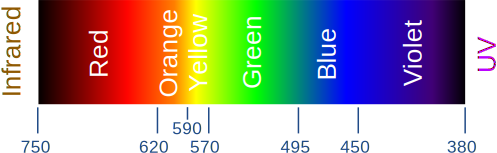
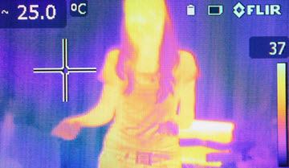
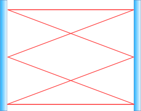
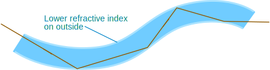

Infrared
Infrared (also called IR) is in the middle of the electromagnetic spectrum:
The wavelength of infrared goes from 1 millimeter to far red light at 750 nanometers (750 billionths of a meter).
Invisible
Infrared is invisible (under special conditions our eyes can see a little into infrared but not well).

So why do hot things glow? Because they are also sending out light:
- warm objects don't glow, but you can feel the heat coming from them
- hot objects glow red because they send out low energy light as well
- very hot objects glow blue-white as they send out a large range of light
(Note: flames can also have special colors due to chemistry, for example blue and violet flames are due to carbon and hydrogen.)
Heat
We all think that infrared is for heat, but all electromagnetic radiation can heat. For example microwave ovens can cook, laser cutters can cut through steel using light, and so on.
But infrared does heat food nicely:

Typically about 2000 Watts of power is used:
- the heat gets absorbed by the food at the surface
- that heat then gets conducted slowly through the rest of the food
Viewing Heat
Special cameras can "see" infrared radiation, and also measure temperatures.

We can see the image because the different wavelengths of infrared are changed into visible light by the electronics inside the camera. We call them "false color" images.
Security

(the beams are really
invisible)
Security systems use infrared detectors to sense when people enter a room.
And invisible infrared beams get interrupted when someone walks through them, which creates an alarm. (They are low power beams, so people don't get cooked!)
And infrared security cameras can "see" in the dark.
Fiber Optics
Infrared, and light, can be sent along fiber optic cables, carrying information coded into the wavelength.
If the signal weakens it can be boosted using special equipment.
Fiber optic cables
The light stays inside because of a special property of refraction: when the refractive index is lower on the outside, and the angle is not too steep, the light beam has total internal reflection on the inside:

Light bounces off the walls inside the cable
Fiber optics are better than electrical wires which get "noise" (undesirable signals that distort or interfere with the original) from power lines, TV/Radio stations, etc.
Also, many different signals can be sent on the same optic fiber cable (using different wave lengths for example.)
Remote Controls
Many remote controls use infrared at 940 nanometers to send signals to TVs and other devices. The digital signal is sent by little flashes of infrared.
The signal behaves like light so cannot go through solid things, but can be reflected off some surfaces.
Try seeing if your remote can control the TV by reflecting off a mirror, glass or wall!